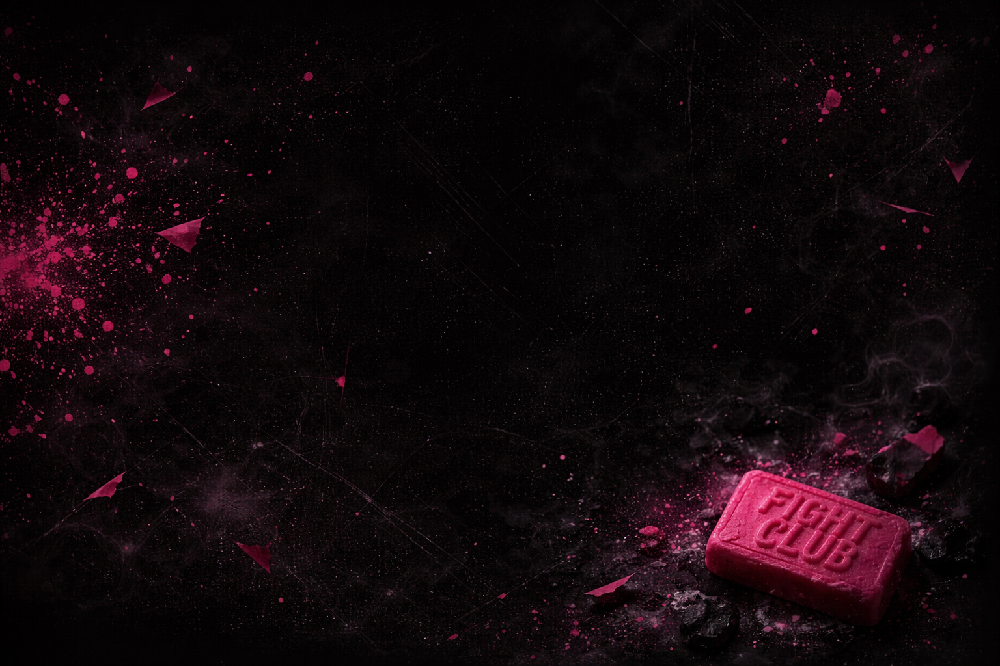

THEORIES
THEORIES
Some films are watched.
Some films stay.
This one... changes you.
We Consume Stories Like Junk Food
Today, films are everywhere. One ends, we start another. Then another.
We consume stories the way we consume junk food... quickly, endlessly, without depth.
But a real director doesn't want you to forget.
He wants the film to stay inside you. To travel within you.
A Film That Changes With You
Some films are made to be watched twice.
Because they reveal themselves in layers.
As a teenager, it feels like rebellion.
Later it feels like recklessness.
And someday it feels like satire.
Maybe… the film isn't celebrating Tyler.
Maybe it's warning us.
Tyler Durden
Tyler Durden is a Symptom
Tyler is not just a character.
He is born from conflict.
The narrator wants freedom but lives like a slave.
He hates his life but cannot leave it.
Tyler is what happens when this contradiction breaks.
The Invisible Prison
We are taught to "do something".
Become something. Achieve something.
And we spend our lives chasing completion... through work, success, and people.
But everything we get… becomes ordinary.
This is slavery.
And we don't even realize we're imprisoned.
"The things you own
end up owning you."
Pain as Awakening
Tyler wants to wake the narrator up.
Not through peace but through pain.
Pain forces presence.
It drags you into the moment.
Like meditation focuses on breath, Tyler focuses on pain.
Tyler uses violence to force awareness.
Why Fight Club Works
Fight Club doesn't solve problems.
It just makes everything else feel small.
After pain - worries disappear.
After chaos - silence feels peaceful.
People felt alive again.
From Freedom to Control
Fight Club becomes Project Mayhem.
Individuals become a crowd.
Thinking disappears. Obedience begins.
Tyler becomes the system he wanted to destroy.
Extremes Are the Same
Absolute control and absolute chaos
are not opposites.
They lead to the same place.
THE REAL TRUTH
Tyler Durden is not the solution.
He is the symptom.
A reaction to a hollow life.
A revolt against unconscious existence.
The fight…
has always been within you.